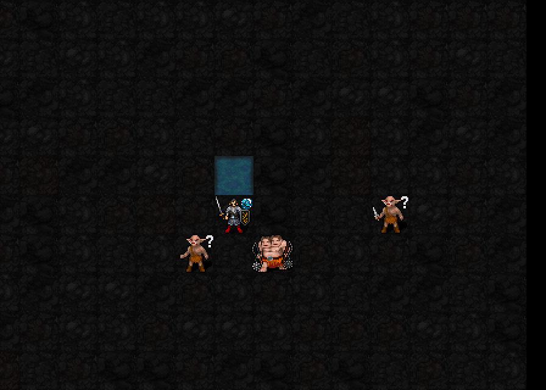

주변2칸(최대5×5)을 실제 얕은 물로 만들고, 영역 안 물 위의 적에게 지속 피해를 줍니다. 물 영역이 이동을 따라옵니다.
해금: 신앙120 · 최소 기도술 제한 없음
비용: MP6·신앙12·행동1턴
기도술12: 시전 완료 후8.4턴 유지, 종료 후15턴 재사용 대기

실제 엔진 캡처입니다. 좌우 이동은 실제 이동 명령으로 진행했습니다. 기존5성 시전 이펙트 초안을 유지했고, 실제 물 영역은 기본 얕은 물 타일입니다. 시전 이펙트와 물 영역을 구분해서 확인해 주세요.
| 항목 | 효과 |
|---|---|
| 영역 | 본인 주변2칸. 보이는 일반 바닥을 얕은 물로 변경. 벽·다른 임시 지형 제외. 이동하면 벗어난5성 물은 복구하고 새 영역을 물로 변경 |
| 지속 | 시전 완료 후6+0.2I턴. I12=8.4턴 |
| 지속 피해 | 매1턴마다2d(3+⌊I/6⌋). I12=2d5,2~10·평균6(AC 전). 별도 명중 굴림 없음. 시전 완료1턴 후부터 첫 피해 |
| 피해 대상 | 주변2칸 안, 보이는 물 위의 적대 몹. 아군·본인 제외. 영역 밖 적 제외 |
| 3성 강화 | 처음부터3줄 폭, 피해+3+⌊I/3⌋, 밀치기2칸. I12:2d11+7,9~29·평균19(AC 전). 사용 시 별도MP3·신앙3 필요 |
| 본인 가호 | 스우 신도는 자연/생성 얕은 물의 이동 지연·근접 헛손질 면제. 깊은 물은 기존 규칙 |
| 종료·보존 | 5성 물은 원래 지형으로 복구. 자연 물과 아직 지속 중인1성 웅덩이는 유지 |
I는 기도술. 신앙은 해금에 사용되며 피해·지속시간에 별도 배율을 주지 않습니다. 기도술12 이번 시연 누적 실제 피해: 적A 21 / 적B 49 (AC·난수 적용 결과).
비용·지속·지속 피해·실제 이동·영역 밖 무피해·자연 물 보존·종료 검증 및22신 회귀/저장 복원 검사 통과. 현재5성 검토 중.